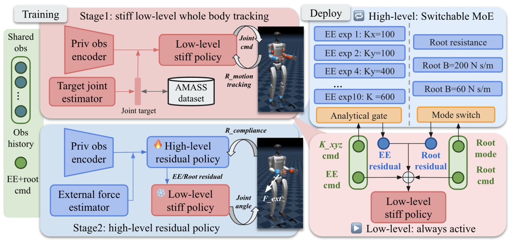
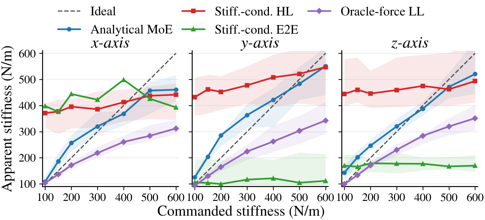

Abstract
General humanoid motion-tracking policies reproduce diverse behaviors but do not specify responses to physical interaction. Existing compliance methods mainly target selected links or end effectors, without jointly controlling axis-wise stiffness and locomotion behavior. We formulate directional and tunable end-effector (EE) compliance together with root resistance and damping modes. Our two-level hierarchical RL controller combines a stiff low-level whole-body tracking policy with high-level residual policies that modify its shared EE–root command interface. An analytical compliance-space mixture-of-experts (MoE) composes 10 experts, enabling independent, continuous stiffness commands along each Cartesian axis over 100–600 N/m. A root-mode command selects one root resistance policy or one of two root damping policies. Using privileged forces, a teacher–student pipeline jointly trains the high-level policies and a force estimator, enabling deployment without wrist force/torque sensors. Simulation evaluations show accurate full-range directional EE compliance, workspace consistency, and distinct root modes. Real-world tasks further demonstrate directional EE compliance, online adjustment of EE stiffness, and concurrent EE–root compliance through the shared interface.
Video
System Framework

Live Demo
Real-world Experiments
Figure-eight Writing
Collaborative Box Carrying
Simulation Experiments
Table Wiping
Peg Insertion
Figure-eight Writing
Box Lifting
Collaborative Carrying
Experimental Results
Full-Range Directional EE Compliance
Independent stiffness control across the Cartesian axes, evaluated over 16 stiffness configurations spanning 100–600 N/m, with 960 trials per method.
Swipe the table to view all metrics →
| Method | Accuracy ↓ lower is better | Trend | |||
|---|---|---|---|---|---|
| Compliance matrix error ↓ |
EE compliance error (m) ↓ |
Stiffness MAPE ↓ |
Slope ideal: 1 |
R2 ↑ ideal: 1 |
|
| Stiff.-cond. HL | 0.677 | 0.0566 | 1.325 | 0.136 | 0.040 |
| Stiff.-cond. E2E | 1.064 | 0.0884 | 5.208 | 3.430 | 0.003 |
| Oracle-force LL | 0.304 | 0.0459 | 0.256 | 0.485 | 0.792 |
| Analytical MoE Ours | 0.278 | 0.0349 | 0.249 | 0.764 | 0.779 |
Bold marks the best value in each column; slope is ranked by proximity to 1. MAPE is reported as a ratio, as in the paper (0.249 = 24.9%). Values from Table IV. Evaluation details ↗
Analytical MoE has the lowest errors and the slope closest to 1; Oracle-force LL has the highest R2.
Commanded vs. Apparent Stiffness

Our Team
Anonymous during review.